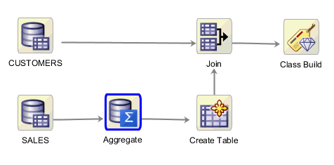
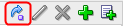
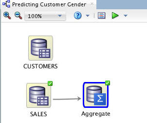
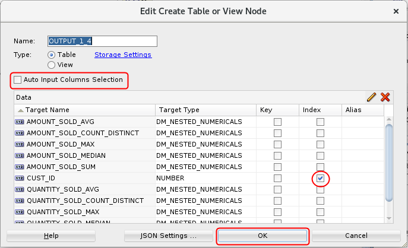
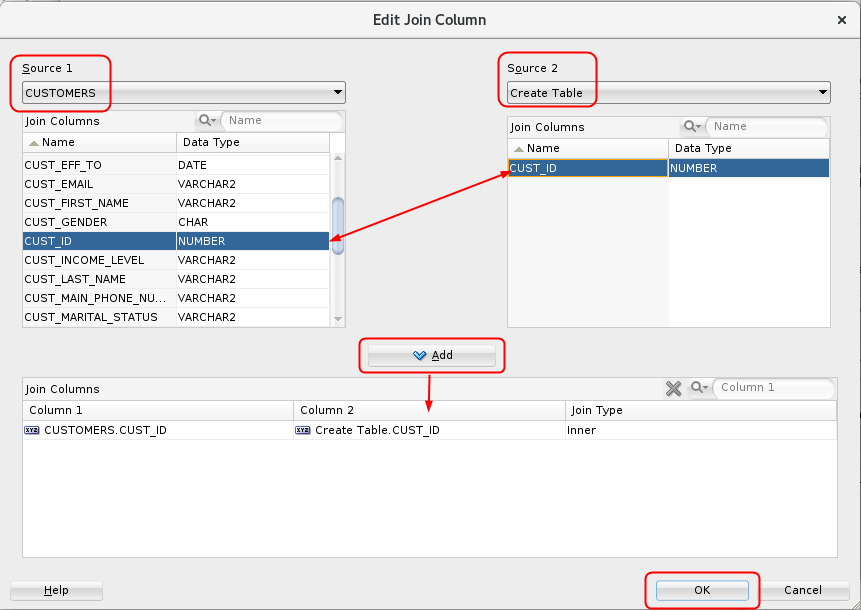
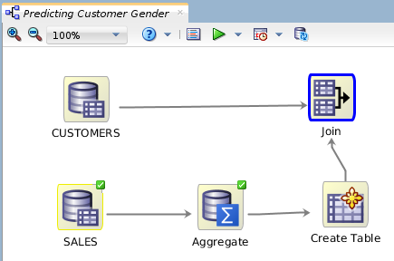

Create
a Logistic Regression Model Workflow
Create
a Logistic Regression Model Workflow Before You Begin
Before You Begin
This 15-minute tutorial shows you how to create a new project, a workflow and add the necessary data sources to the workflow. Rather than use the Data Miner sample data, you will use the Sales History schema data.
Background
Generalized Linear Models provide great transparency, which may be achieved at the expense of accuracy. With the introduction of a feature selection and generation capability, GLMs can maintain a high degree of accuracy without sacrificing transparency (the ability to explain the predictions made by the model).
- Feature Selection is the process of selecting the most meaningful attributes. With feature selection, GLMs can be created with fewer predictors, leading to smaller models and faster scoring.
- Feature Generation is the process of combining attributes into new features. With feature generation, GLMs use non-linear terms (up to cubic terms), leading to more powerful models and increased transparency.
Scenario
Here, you focus on a business problem that can be solved by applying a Classification model. In our scenario, ABC Company wants to know which customer attributes are most significant in predicting the gender of a customer. The new feature selection / generation enhancements are used as part of this mining exercise.
In this new workflow, you:
- Identify and select two new data sources from the Oracle Database sample SH schema: the SALES and CUSTOMERS tables.
- Summarize the QUANTITY_SOLD and AMOUNT_SOLD measures from the SALES table by Customer and Product, over the Promotion and Channel dimensions.
- Place the summarized data into a new table.
- Join the summarized sales data with customer data to provide a pool of data for the Classification model.
- Apply the Feature Selection / Generation option with a GLM algorithm and examine the results.
The completed workflow looks like this:

What Do You Need?
- Oracle Database 19c Enterprise Edition
- Oracle SQL Developer version 19.x
- Oracle Data Miner User Account
- Access to the Sales History sample schema
- SELECT permissions to DMUSER on the SH schema
 Create
a New Data Miner Project
Create
a New Data Miner Project
This is an unnumbered paragraph before a procedure.
- Select the Data Miner tab. The PDB1-DMUSER connection that you previously created appears
- In the Create Project window, enter SH Schema as the project name and then click OK.
 Create
a Workflow and Add Data Sources
Create
a Workflow and Add Data Sources
- Right-click the SH Schema project and select New Workflow from the menu.
- In the Create Workflow window, enter Predicting Customer Gender as the name and click OK.
- In the Component Palette, open the Data category, then drag/drop a Data Source node to the workflow pane.
- In Step 1 of the Wizard:
- Select the Include Tables from Other Schemas option.
- Click YES in the Edit Schema List information box.
- In the Edit Schema List dialog, move SH from the Available Schemas list to the Selected Schemas list and click OK.
- In the Define Data Source wizard, select SH.CUSTOMERS from the Available Tables/Views list and click FINISH.
- Add a second Data Source node to the workflow, select the SH.SALES table, and click Finish.
- Click the Save All tool in the SQL Developer toolbar.
 Aggregate
the Data
Aggregate
the Data
The Transforms node group contains a number of tools that enable you to transform data for use within a workflow.
- Open the Transforms group, and then drag and drop the Aggregate node to the workflow.
- Connect the SALES data source node to the Aggregate node, by
doing the following:
- Right-click the SALES node
- Select Connect from the pop-up menu.
- Drag the pointer to the Aggregate node and release.
- Double-click the Aggregate node to display to display the Edit Aggregation window.
- Select a "Group By" attribute for the aggregation by
performing the following:
- Click Edit to open the Edit Group By window.
- With Column selected as the Type value, move CUST_ID from the Available Attributes list to the Selected Attributes list, and then click OK.
- Click the Aggregation Wizard tool (

) to launch the wizard. - In the Define Aggregation Wizard:
- In Step 1 of the Define Aggregation wizard, select COUNT (DISTINCT()), SUM(), MAX(), MEDIAN(), and AVG() as the numerical functions, and then click Next.
- In Step 2 of the wizard, move AMOUNT_SOLD and QUANTITY_SOLD to the Selected Attributes list and click Next.
- In Step 3 of the wizard, move PROD_ID to the Selected Attributes list and then click Finish.
- In the Edit Aggregation window, click OK to save the aggregation rules.
- Right-click on the Aggregate SALES node and select Run
to run the aggregation.

Description of the illustration sales-aggregate.jpg The Aggregate node is executed and the process creates a nested table that can be used for data mining.
- In the Components tab, open on the Data group and drag a Create Table or View node to the workflow.
- Connect the Aggregate node to OUTPUT node, and then rename the OUTPUT node to "Create Table".
- Double-click the Create Table node and in
the Edit Create Table or View Node window, perform the
following:
- De-select the Auto Input Columns Selection option.
- Select the Index option for the CUST_ID column.
- Click OK.

Description of the illustration create-table.png
 Add a
Join Node to the Workflow
Add a
Join Node to the Workflow
- From the Transforms group, drag and drop a Join node to the workflow.
- Connect the Create Table node to Join node, and the CUSTOMERS node to the Join node.
- Double-click the Join node to display the Edit Join Node window. The Join tab is displayed by default. Then, click the Add (green "+" icon).
- In the Edit Join Column window:
- Select CUSTOMERS as Source 1, and Create Table as Source 2.
- Select the CUST_ID column from both sources.
- Click the Add button to define the Join Columns.
- Click OK.

Description of the illustration edit-join-column.png
- Select the Columns tab of the Edit Join Node window, and
remove the CUST_ID column from the Create Table source by
performing the following:
- Deselect the Automatic Settings option.
- Select the CUST_ID column from the Create Table node.
- Click the Remove tool (red "x" icon).
- Click Yes in the Warning window.
- Click OK in the Edit Join Node window.

Description of the illustration workflow-after-join.png Your workflow should look similar.
 Next Tutorial
Next Tutorial
In the next tutorial, you'll build and compare logisitic regression classification models.